/// ACT04_SOCIAL_ENGINEERING
> CNO_IV // ACTIVIDAD_04 // LABORATORIO_CONTROLADO...
Una página demasiado convincente
Profesor: Servando López Contreras
Jesús Israel Martínez Escobedo - 175325
Ingeniería en Tecnologías de la Información
Universidad Politécnica de San Luis Potosí
CNO IV - Seguridad Informática
2026
Índice
Introducción
La ingeniería social constituye una de las técnicas utilizadas para manipular el comportamiento de las personas con el propósito de obtener información, provocar determinadas acciones o generar una sensación de confianza hacia una fuente aparentemente legítima.
Dentro de este contexto, el phishing puede utilizar páginas web que imitan la apariencia de portales institucionales para inducir al usuario a proporcionar información de autenticación. La eficacia de este tipo de ataques no depende únicamente de aspectos técnicos, sino también de factores como la confianza, la urgencia y la falta de verificación del usuario.
En esta actividad se analiza este escenario mediante un laboratorio controlado basado en una página web ficticia y herramientas de seguridad ejecutadas localmente. El propósito es comprender el funcionamiento general del flujo de información, reconocer indicadores de phishing y proponer controles que permitan reducir el riesgo.
Objetivo de la actividad
El objetivo general de esta actividad fue implementar y analizar, dentro de un entorno de laboratorio controlado, una simulación de ingeniería social mediante Social-Engineer Toolkit (SET), utilizando una página web ficticia para comprender el funcionamiento de una técnica de captura de información y reconocer los elementos que permiten identificar un posible intento de phishing.
Objetivos específicos
- Configurar un escenario básico de ingeniería social utilizando Social-Engineer Toolkit (SET).
- Implementar una página web ficticia mediante el módulo Credential Harvester.
- Analizar el proceso mediante el cual la información introducida en un formulario web puede ser transmitida y registrada por un servidor.
- Identificar indicadores técnicos y visuales que permitan reconocer una página potencialmente fraudulenta.
- Proponer controles de seguridad orientados a prevenir o reducir el impacto de ataques de phishing.
Descripción del escenario
El área de seguridad informática de una organización recibió diversos reportes de empleados que afirmaron haber recibido un mensaje relacionado con una supuesta actualización de sus credenciales.
El mensaje contenía un enlace que dirigía a un portal que, visualmente, aparentaba pertenecer a la organización. La página presentaba elementos comunes de un sistema institucional de autenticación, incluyendo un nombre de sistema, campos para usuario y contraseña y un botón de ingreso.
“Su sesión ha expirado. Inicie sesión nuevamente para continuar.”
A primera vista, el portal podía parecer legítimo debido a su diseño y a la utilización de elementos visuales asociados con sistemas corporativos. Sin embargo, el portal no pertenecía realmente a la organización.
Para esta actividad se recreó este escenario exclusivamente dentro de un laboratorio controlado, utilizando una página web ficticia y un servidor local. No se utilizaron servicios reales, credenciales personales, dominios externos ni infraestructura expuesta a Internet.
Configuración del laboratorio
La actividad se desarrolló en un entorno de laboratorio controlado utilizando una máquina virtual con Kali Linux. El objetivo fue analizar de forma segura el funcionamiento de una simulación de ingeniería social sin utilizar servicios reales ni exponer la infraestructura hacia Internet.
Sistema utilizado para ejecutar las herramientas de seguridad y realizar las pruebas del laboratorio.
Framework utilizado para estudiar técnicas de ingeniería social, incluyendo el módulo Credential Harvester.
Se desarrolló un portal institucional simulado denominado CNO Systems, diseñado exclusivamente para el laboratorio.
La página fue servida localmente mediante un servidor HTTP
ejecutado en Kali Linux, utilizando la dirección
127.0.0.1:8000.
Las pruebas se realizaron dentro de una red privada y controlada, sin publicar el servidor hacia Internet.
Para las pruebas se utilizaron únicamente datos de laboratorio. No se emplearon credenciales personales ni información perteneciente a terceros.
Flujo general del laboratorio
Toda la actividad se mantuvo dentro del entorno local. No se utilizaron páginas reales, dominios externos, credenciales personales, técnicas de suplantación DNS, payloads ni código malicioso.
Evidencias y descripción del funcionamiento
En esta sección se presentan las evidencias obtenidas durante la preparación y análisis del escenario de laboratorio. Las pruebas se realizaron exclusivamente con una página web ficticia y dentro de un entorno local y controlado.
Evidencia 01 — Inicio de Social-Engineer Toolkit
Se muestra el menú principal de Social-Engineer Toolkit (SET) ejecutándose en Kali Linux. Desde este menú se puede acceder a diferentes módulos relacionados con técnicas de ingeniería social.
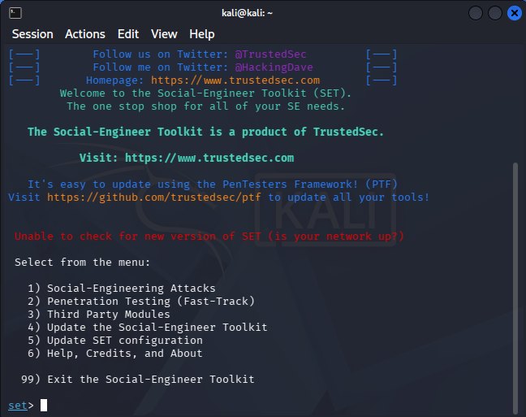
Evidencia 02 — Website Attack Vectors
Se muestra el menú de Website Attack Vectors, donde SET presenta diferentes métodos de ataque basados en aplicaciones web. Entre las opciones disponibles se encuentra Credential Harvester Attack Method.
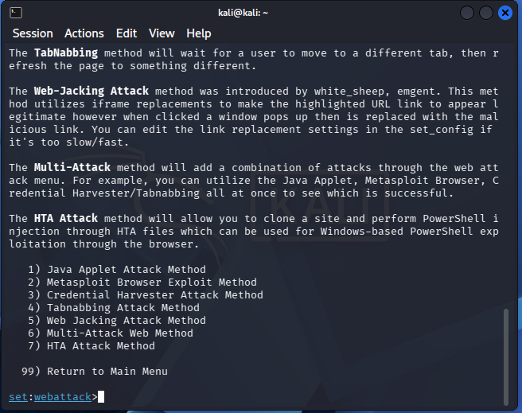
Evidencia 03 — Credential Harvester Attack Method
Se muestra la selección del módulo Credential Harvester Attack Method. Este componente permite analizar el funcionamiento de formularios web y el registro de los parámetros enviados a un servidor.
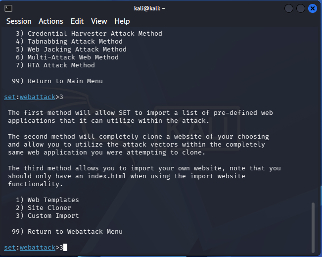
Evidencia 04 — Custom Import
Se seleccionó la opción Custom Import para incorporar al escenario una página web desarrollada específicamente para el laboratorio. De esta manera se evitó utilizar páginas pertenecientes a servicios o instituciones reales.
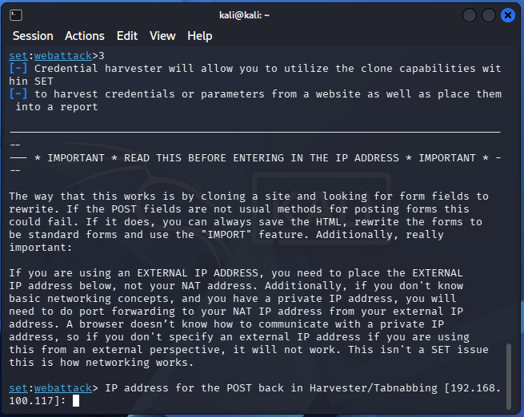
Evidencia 05 — Portal ficticio CNO Systems
Se muestra el portal ficticio
CNO Systems ejecutándose en Mozilla Firefox
mediante la dirección local
127.0.0.1:8000. La página contiene los elementos
de un sistema institucional de autenticación, incluyendo
identificación de empleado, contraseña y un mensaje relacionado
con la expiración de sesión.
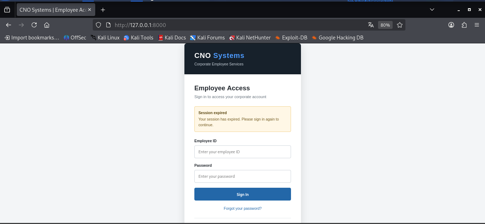
Evidencia 06 — Importación de la carpeta completa
SET detectó el archivo index.html dentro del
directorio utilizado para el laboratorio. Se seleccionó la
opción Copy the entire folder para incorporar
los archivos de la página ficticia al escenario.
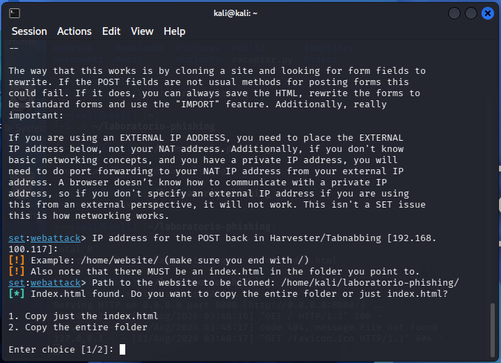
Evidencia 07 — Verificación del servidor local
Se utilizó el comando
curl -I http://127.0.0.1:8000
para comprobar que el servidor HTTP local estaba disponible.
La respuesta HTTP 200 OK confirmó que el
recurso podía ser solicitado correctamente.
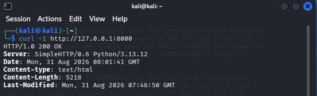
Evidencia 08 — Verificación del contenido HTML
Se realizó una solicitud mediante curl y se
utilizaron las primeras 20 líneas de salida para comprobar
que el servidor estaba entregando el documento HTML
correspondiente al portal ficticio.
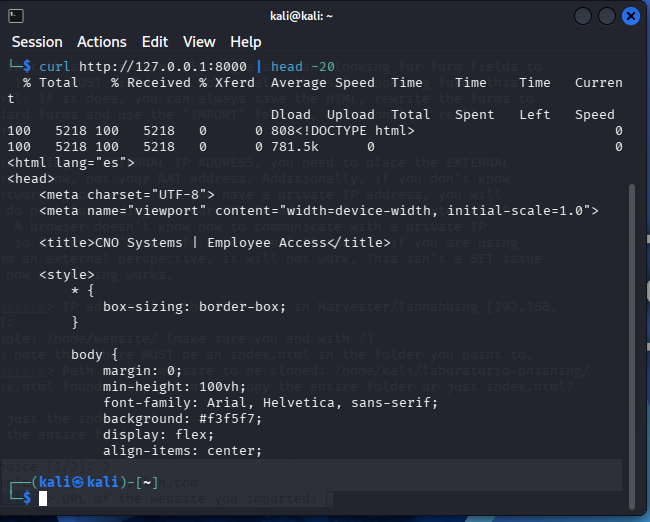
Evidencia 09 — Inspección detallada de HTTP
Se utilizó curl -v para observar detalladamente
la comunicación entre el cliente y el servidor. La salida
permite identificar el establecimiento de la conexión, la
solicitud HTTP y la respuesta 200 OK.
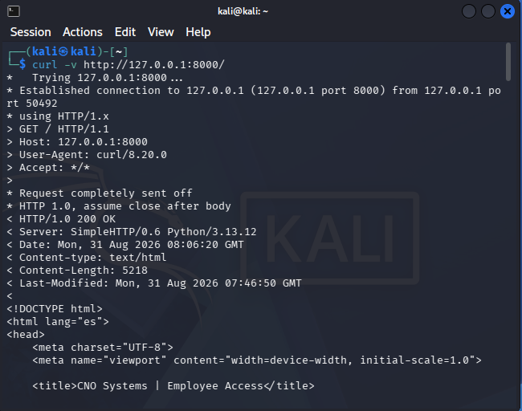
Evidencia 10 — Verificación mediante DevTools
Mediante las herramientas de desarrollo del navegador se
inspeccionó la pestaña Network. La solicitud
correspondiente al recurso principal / presentó
un estado 200 OK, confirmando que el navegador
recibió correctamente el recurso desde el servidor local.
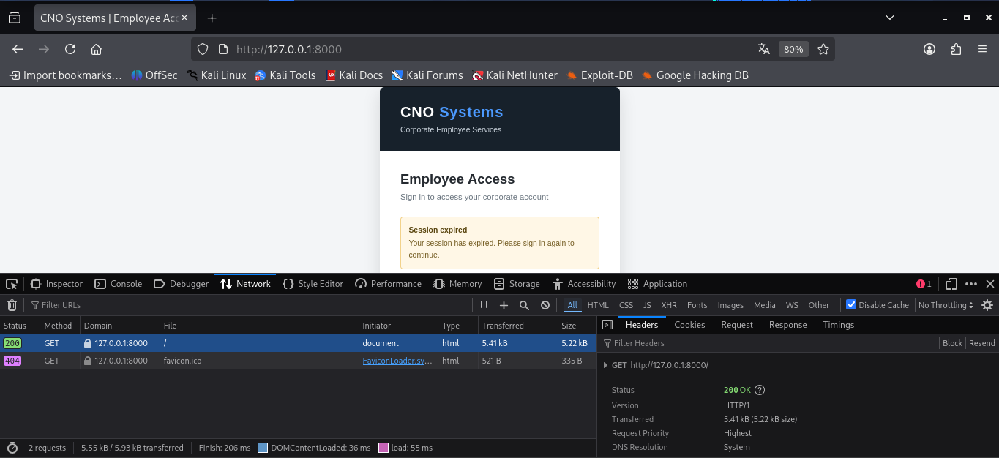
Evidencia 11 — Inspección del formulario
Se inspeccionó mediante la herramienta
Inspector la estructura HTML del formulario.
Se identificaron los campos de usuario y contraseña, así como
el botón Sign In. También se observa la
instrucción onsubmit="return false;", utilizada
para impedir el envío del formulario durante la simulación.
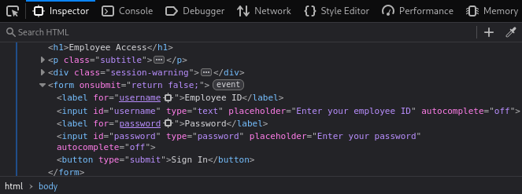
Evidencia 12 — Prueba controlada de envío
Se introdujo el identificador ficticio
LAB-175325 en el campo de usuario y se presionó
el botón Sign In, manteniendo el campo de
contraseña vacío. La observación de la pestaña
Network permitió comprobar que no se generó
una nueva solicitud asociada al envío del formulario.
El formulario permaneció controlado y no transmitió credenciales ni información personal. Esto permitió analizar la interfaz y el comportamiento de red sin utilizar datos reales.
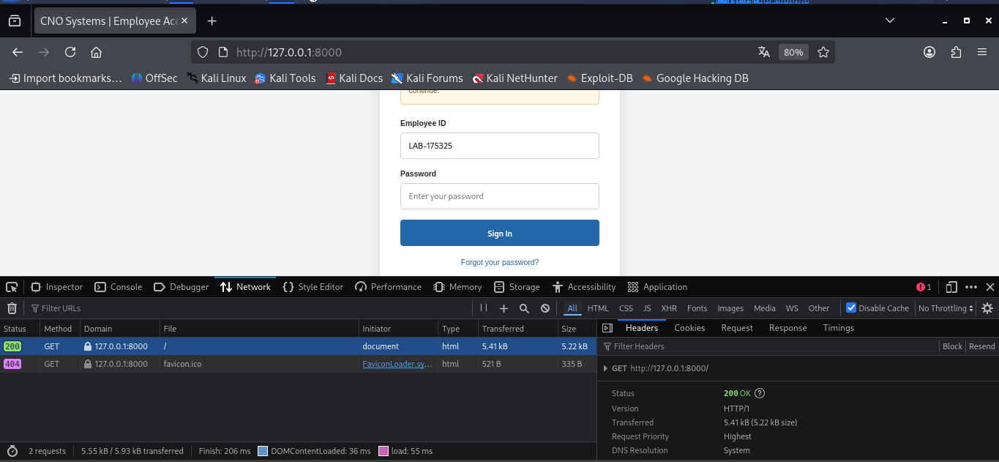
Flujo de captura de información
En una implementación de Credential Harvester, el flujo de información comienza cuando un usuario interactúa con un formulario web y proporciona datos. El navegador genera una solicitud HTTP hacia el servidor definido para procesar el formulario.
Introduce información en el formulario.
Recibe los parámetros introducidos.
Los parámetros pueden viajar en una solicitud, por ejemplo mediante POST.
Procesa la solicitud recibida.
Los parámetros recibidos pueden quedar registrados.
Aplicación al laboratorio
En la práctica realizada, este flujo se mantuvo deliberadamente
incompleto. Aunque se construyó el formulario y se analizó la
comunicación HTTP, el atributo
onsubmit="return false;"
impidió que el formulario generara una petición de envío.
Laboratorio
- Página ficticia.
- Servidor local.
- Datos ficticios.
- Sin envío de credenciales.
Escenario de phishing
- Página controlada por un atacante.
- Formulario configurado para recibir información.
- Solicitud HTTP con parámetros.
- Posible registro de los datos recibidos.
La captura de credenciales consiste en obtener los datos que un usuario introduce voluntariamente en un formulario fraudulento. Esto no significa necesariamente que el atacante haya descifrado, vulnerado o comprometido criptográficamente la contraseña original.
Indicadores de phishing
El phishing utiliza elementos técnicos y psicológicos para generar confianza y conseguir que una persona proporcione información o realice una acción. En el escenario analizado se identifican los siguientes indicadores.
URL sospechosa
La dirección del portal no corresponde con el dominio oficial de la organización. La revisión de la URL es uno de los primeros mecanismos para detectar un sitio fraudulento.
Solicitud inesperada de credenciales
Un mensaje que solicita volver a introducir usuario y contraseña debe verificarse antes de proporcionar cualquier información.
Urgencia o presión
Mensajes relacionados con sesiones expiradas, bloqueos o problemas de acceso pueden provocar una respuesta impulsiva antes de verificar la legitimidad del mensaje.
Apariencia institucional
Logotipos, colores, nombres de sistemas y diseños similares a los utilizados por una organización pueden utilizarse para aumentar la credibilidad de un portal fraudulento.
Enlace no verificado
Los enlaces incluidos en correos o mensajes inesperados deben comprobarse antes de utilizarlos. El texto visible del enlace no garantiza que su destino sea legítimo.
Autenticación insuficiente
Un sistema que depende únicamente de usuario y contraseña ofrece menos protección frente a la reutilización o captura de credenciales que uno que incorpora mecanismos adicionales de autenticación.
Controles de seguridad propuestos
La prevención del phishing requiere combinar controles técnicos, administrativos y de concientización. Ninguna medida elimina por completo el riesgo, por lo que se recomienda utilizar diferentes capas de protección.
Autenticación multifactor
Implementar MFA agrega un segundo factor de autenticación además de la contraseña, reduciendo el impacto de una credencial que haya sido capturada mediante phishing.
Protección del correo electrónico
Utilizar filtros de correo, análisis de reputación y mecanismos de detección de enlaces o archivos sospechosos permite bloquear una parte importante de los mensajes utilizados para distribuir campañas de phishing.
Análisis y protección de URLs
Los mecanismos de análisis de URLs y reputación web pueden identificar dominios conocidos por distribuir contenido malicioso o páginas relacionadas con campañas de phishing.
Capacitación de usuarios
La formación periódica permite que los usuarios reconozcan señales como URLs sospechosas, solicitudes inesperadas, mensajes urgentes y páginas que solicitan información sensible.
Gestión segura de credenciales
El uso de contraseñas únicas y administradores de contraseñas reduce el impacto de una credencial expuesta, evitando que una misma contraseña pueda utilizarse para acceder a diferentes servicios.
La protección más efectiva surge de combinar controles tecnológicos con procedimientos y educación. Si una capa falla, las demás pueden reducir la probabilidad o el impacto de un incidente.
Conclusión
La actividad permitió analizar de manera práctica el funcionamiento de una campaña de phishing basada en la captura de información mediante formularios web, utilizando exclusivamente un entorno controlado y una página ficticia desarrollada para el laboratorio.
El escenario permitió comprobar que una página puede presentar una apariencia institucional y solicitar información de autenticación sin que necesariamente pertenezca a la organización que aparenta representar. Elementos como una solicitud inesperada de inicio de sesión, mensajes de urgencia, enlaces no verificados y una URL que no corresponde con el dominio legítimo constituyen señales que deben ser analizadas antes de proporcionar información.
Desde el punto de vista técnico, el análisis permitió relacionar el formulario web con el modelo de comunicación HTTP, identificando el papel del navegador, la petición, el servidor y el posible registro de parámetros. También se distinguió entre la captura de credenciales mediante un formulario y la vulneración o descifrado de una contraseña, conceptos que representan procesos diferentes.
Finalmente, se comprobó que la protección contra phishing requiere una estrategia de defensa en profundidad. Medidas como la autenticación multifactor, protección del correo, análisis de URLs, capacitación de usuarios y gestión segura de credenciales pueden reducir significativamente el riesgo, aunque ninguna medida individual elimina por completo la posibilidad de un ataque.
Referencias
Las siguientes fuentes fueron utilizadas para sustentar los conceptos, riesgos, controles de seguridad y aspectos técnicos abordados durante el laboratorio.
Informe
Consulta o descarga el informe completo de la actividad.